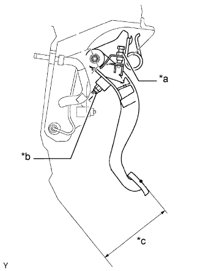

ПЕДАЛЬ СЦЕПЛЕНИЯ (для моделей с левосторонним рулевым управлением) > РЕГУЛИРОВКА |
| 1. ПРОВЕРЬТЕ И ОТРЕГУЛИРУЙТЕ ПЕДАЛЬ СЦЕПЛЕНИЯ В СБОРЕ |
Отогните напольный коврик.
|  |
Проверьте высоту педали.
| *a | Точка регулировки высоты педали |
| *b | Точка регулировки люфта штока и свободного хода |
| *c | Высота педали |
Отрегулируйте высоту педали.
Для моделей с системой круиз-контроля:
Ослабьте контргайку и, поворачивая переключатель муфты, отрегулируйте высоту. Затяните контргайку.
Для моделей без системы круиз-контроля:
Ослабьте контргайку и, поворачивая ограничительный болт педали сцепления, отрегулируйте высоту. Затяните контргайку.
 |
Проверьте люфты педали и штока.
| *a | Свободный ход педали тормоза |
| *b | Люфт штока |
Нажимайте на педаль до тех пор, пока не почувствуете сопротивление.
Измерьте расстояние между положением педали в свободном состоянии и ее положением в предыдущем шаге.
Отпустите педаль. Осторожно нажмите пальцем на педаль, пока не почувствуете слабое увеличение сопротивления.
Измерьте расстояние между положением педали в свободном состоянии и ее положением в предыдущем шаге.
Отрегулируйте свободный ход педали и люфт штока.
Ослабьте контргайку и, вращая шток, отрегулируйте люфты педали и штока так, чтобы они находились в заданных диапазонах.
Затяните контргайку.
Проверьте высоту педали.
 |
Проверьте точку выключения сцепления.
| *a | Конечное положение полного хода |
| *b | Положение расцепления |
| *c | 25 мм или более |
Затяните рычаг стояночного тормоза и стабилизируйте автомобиль, установив под колеса колодки.
Запустите двигатель на холостом ходу.
Не нажимая педаль сцепления, медленно установите рычаг переключения передач в положение R до приведения шестерен в контакт.
Плавно нажмите педаль сцепления и измерьте длину хода от точки, в которой прекратился шум шестерен (точка выключения), до положения конца хода.